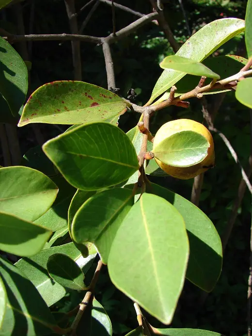

Desserts · Popular in Northland and Auckland
Cherry guava jelly
Cherry guava jelly is made with wild cherry guava, a favourite in Northland and Auckland.

How do you make cherry guava jelly?
Cherry guavas cooked and strained into jelly.
Wild ingredients
- Cherry guava (Psidium cattleianum): in season February to May
Watch the recipe

Video: Traditional Me on YouTube